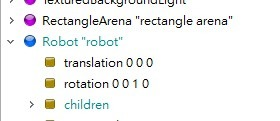
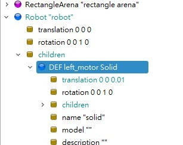
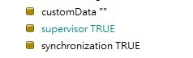

製作過程簡述 <<
Previous Next >> 第二階段：建立第一節手臂 (Link 1) 與馬達
第一階段：建立基礎機器人與底座 (Base Setup)
-
建立 Robot 節點：
新增一個 Robot 節點。
注意：務必確認 Robot 的 translation 是 0 0 0，這是整個模型的絕對原點。

-
建立底座外型：
在 Robot 的 children 下新增 Shape -> Cylinder (圓柱)。
設定尺寸：半徑 0.02，高度 0.02。
關鍵細節：Webots 的幾何中心預設在物體正中心。因此圓柱有一半會埋在地下。
修正步驟：修改 Shape 的 translation，將 Z 軸設為 0.01 (高度的一半)，把它「提」到地面上。

-
Supervisor 設定：
如果這個機器人未來需要畫線（如標題 Plotter），需要將 supervisor 欄位設為 TRUE。

製作過程簡述 <<
Previous Next >> 第二階段：建立第一節手臂 (Link 1) 與馬達